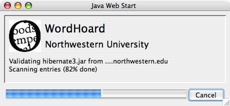
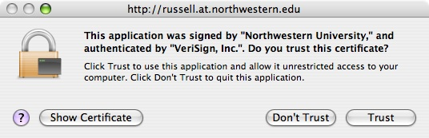
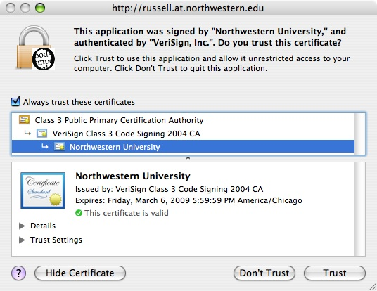
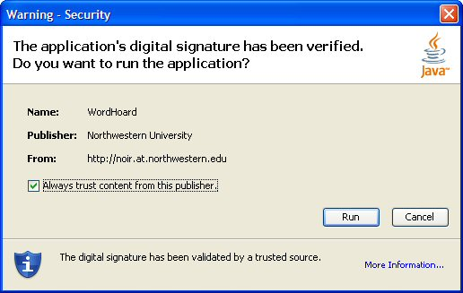
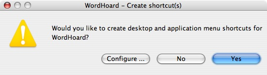
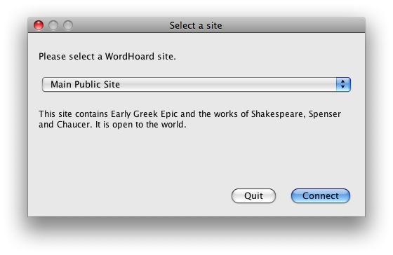
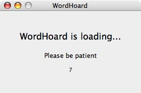

|
|
|
WordHoard is a Java Web Start application that runs on Microsoft Windows, macOS, and Linux. It may work on some less common systems that support its dependencies. See Java Requirements for more on those dependencies.
WordHoard requires a minimum screen size of 1024 by 768 pixels. The bigger your screen the better. A broadband Internet connection is also essential.
WordHoard is a Java application, so you need to have Java installed on your computer. We currently require Java version 1.8 (also confusingly called Java 8). Java is still available via commercial license from Oracle, but there is no advantage to using that instead of the free and open source OpenJDK. There are various OpenJDK distributors that offer free downloads, including Adoptium, OpenLogic, Microsoft, or your operating system package installer.
The Web Start technology upon which WordHoard is based is no longer included with any Java or OpenJDK distribution. Luckily there is an excellent free replacement available from OpenWebStart; you should install Java or OpenJDK first, and then install OpenWebStart. If OpenWebStart is unavailable for your platform, you may be able to get WordHoard working with IcedTea-Web.
WordHoard selects appropriate fonts on your system to display works in the Roman alphabet (used by the English language corpora) and in the Polytonic Greek alphabet (used by the Early Greek Epic corpus). Both macOS and Windows have built-in system fonts that contain all the characters WordHoard needs.
You might like to try the Gentium font, available at the Gentium Web Site. Gentium was designed for use with multilingual applications like WordHoard. You can download free versions for the Mac, Windows, and Linux. If you have Gentium installed on your system, WordHoard uses it by default.
If you use a Linux system, you should install Gentium. On most Linux systems, the built-in fonts cannot display all of the characters used by WordHoard, especially the many Polytonic Greek accented letters.
See also: Font Preferences
We use a Java technology named "Web Start" to distribute and run WordHoard. The Download and Run WordHoard link on our front page will very likely not actually run the program once it's downloded; this is a security feature of modern browsers. You will need to locate the downloaded file called wordhoard.jnlp, right click on it, and choose to open it with OpenWebStart or IcedTea-Web.
When Web Start downloads WordHoard to your computer, it saves a copy in a special system "cache" directory on your hard drive. The next time you run the program, Web Start runs it directly from the cache, so you don't have to wait for it to download again.
Each time you run WordHoard, Web Start checks to see if there is a new version available. If there is, the new version is automatically downloaded. So you are always kept up-to-date. You don't have to worry about checking for new versions yourself, downloading them, or running any kind of installer.
When Web Start is downloading files, it presents a progress dialog that looks like the following:

The first time you run WordHoard, a security warning will appear. Click the "Trust" button. On some systems, the messages and buttons may be labelled differently, and you may need to click a button named "Start" or "OK".

On some systems, you won't see the warning again after the first time you run the program. On other systems, you may need to take some kind of explicit action to get rid of the warning. For example, on macOS systems which present the security warning pictured above, to get rid of the security warning on future runs of the program, click the "Show Certificate" button and turn on the "Always trust these certificates" checkbox. The security warning will not appear again for this or any other program digitally signed authoritatively by Northwestern University.

A similar dialog appears on Windows systems. If you select the check box "Always trust content from this publisher," the security dialog will not appear again for this or any other program digitally signed with the same certificate.
WordHoard wants the same rights as any other typical application program you run on your machine. WordHoard needs to establish network connections to remote servers for database access and session control, and to allow access to your local disk drives in order to install itself and store your preferences. If you use WordHoard scripts, those let you do whatever any typical programming language lets you do.
WordHoard cannot subvert any system privileges you already have in place. The warning about WordHoard requesting unrestricted access which appears on some systems is misleading (and unfortunately, we can't change that text). This warning just indicates that WordHoard does not impose any restrictions on system access beyond those your system configuration sets. It is possible for a Java program to disallow access to the network, system clipboard, local files, and so on. Such restrictions are useful when writing browser-based Java applets. They don't make sense for a regular desktop application like WordHoard.

The first or second time you run WordHoard, Web Start asks if you want to save a desktop version of the program. We recommend that you do this. In the future, you can use the desktop icon to run the program without having to come back to this web page. Indeed, you won't even need to have your web browser running! On Microsoft Windows systems, Web Start also adds a "WordHoard" command to your "Start" menu.

Web Start on Linux or Unix systems may not allow you to save a desktop version. You can always start WordHoard from the Download and Run WordHoard link or by locating the wordhoard.jnlp file and explicitly opening it with your web start program.
If the WordHoard server to which you are connecting offers more than one collection of texts, the following dialog may appear when you run WordHoard (any time, not just the first time):

Select a site from the menu, then click "Connect".
It can take a long time for WordHoard to load and connect to the site you selected. While it is loading it displays the following dialog:

The number at the bottom ticks up each second. It can take 5-20 seconds for the program to load, before the first window appears (the Table of Contents window). As the dialog says, please be patient.
|
|
|